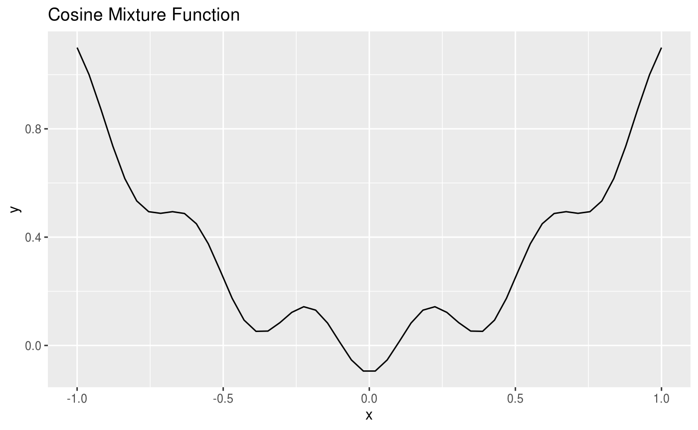
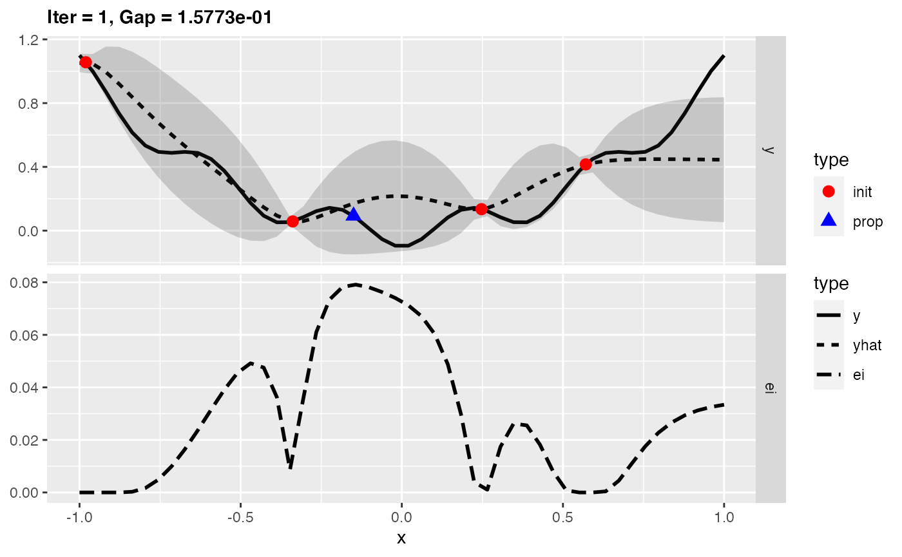
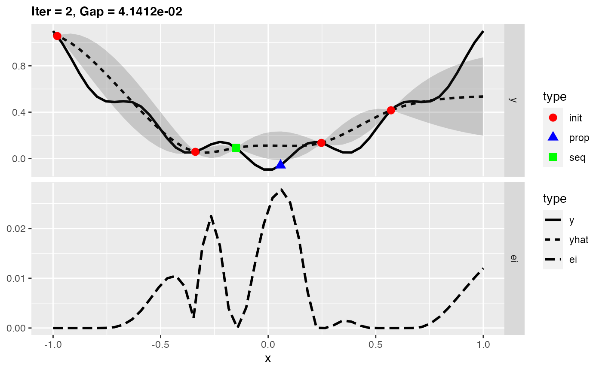
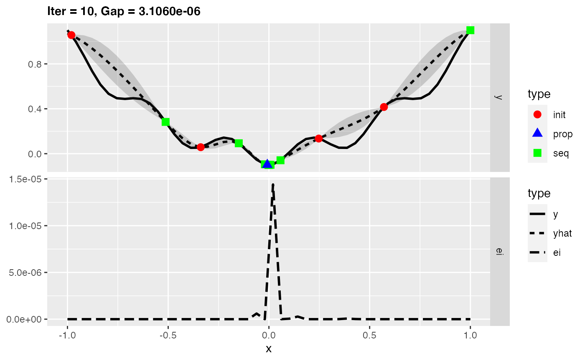

Overview
The main goal of mlrMBO is to optimize expensive black-box functions by model-based optimization (aka Bayesian optimization) and to provide a unified interface for different optimization tasks and algorithmic MBO variants. Supported are, among other things:
- Efficient global optimization (EGO) of problems with numerical domain and Kriging as surrogate
- Using arbitrary regression models from mlr as surrogates
- Built-in parallelization using multi-point proposals
- Mixed-space optimization with categorical and subordinate parameters, for parameter configuration and tuning
- Multi-criteria optimization
This vignette gives a brief overview of the features of mlrMBO. A more detailed documentation can be found on: https://mlrmbo.mlr-org.com/.
Quickstart
Prerequisites
Installing mlrMBO will also install and load the dependencies mlr, ParamHelpers, and smoof. For this tutorial, you also need the additional packages DiceKriging and randomForest.
General MBO workflow
- Define objective function and its parameters using the package
smoof. - Generate initial design (optional).
- Define
mlrlearner for surrogate model (optional). - Set up a MBO control object.
- Start the optimization with
mbo().
As a simple example we minimize a cosine-like function with an initial design of 5 points and 10 sequential MBO iterations. Thus, the optimizer is allowed 15 evaluations of the objective function in total to approximate the optimum.
Objective Function
Instead of manually defining the objective, we use the smoof package which offers many toy and benchmark functions for optimization.
obj.fun = makeCosineMixtureFunction(1)
obj.fun = convertToMinimization(obj.fun)
print(obj.fun)
## Single-objective function
## Name: Cosine Mixture Function
## Description: no description
## Tags: single-objective, discontinuous, non-differentiable, separable, scalable, multimodal
## Noisy: FALSE
## Minimize: TRUE
## Constraints: TRUE
## Number of parameters: 1
## Type len Def Constr Req Tunable Trafo
## x numericvector 1 - -1 to 1 - TRUE -
## Global optimum objective value of -0.1000 at
## x
## 1 0
ggplot2::autoplot(obj.fun)
You are not limited to these test functions but can define arbitrary objective functions with smoof.
makeSingleObjectiveFunction(
name = "my_sphere",
fn = function(x) {
sum(x*x) + 7
},
par.set = makeParamSet(
makeNumericVectorParam("x", len = 2L, lower = -5, upper = 5)
),
minimize = TRUE
)
## Single-objective function
## Name: my_sphere
## Description: no description
## Tags:
## Noisy: FALSE
## Minimize: TRUE
## Constraints: TRUE
## Number of parameters: 2
## Type len Def Constr Req Tunable Trafo
## x numericvector 2 - -5 to 5 - TRUE -Check ?smoof::makeSingleObjectiveFunction for further details.
Initial Design
Before MBO can really start, it needs a set of already evaluated points - the inital design, as we have to initially learn our first machine learning regression model to propose new points for evaluation. If no design is given (i.e. design = NULL), mbo() will use a Maximin Latin Hypercube lhs::maximinLHS() design with n = 4 * getNumberOfParameters(obj.fun) points. If the design does not include function outcomes mbo() will evaluate the design first before starting with the MBO algorithm. In this example we generate our own design.
des = generateDesign(n = 5, par.set = getParamSet(obj.fun), fun = lhs::randomLHS)We will also precalculate the results:
des$y = apply(des, 1, obj.fun)Note: mlrMBO uses y as a default name for the outcome of the objective function. This can be changed in the control object.
Surrogate Model
We decide to use Kriging as our surrogate model because it has proven to be quite effective for numerical domains. The surrogate must be specified as a mlr regression learner:
surr.km = makeLearner("regr.km", predict.type = "se", covtype = "matern3_2", control = list(trace = FALSE))Note: If no surrogate learner is defined, mbo() automatically uses Kriging for a numerical domain, otherwise random forest regression.
MBOControl
The MBOControl object allows customization of the optimization run and algorithmic behavior of MBO. It is created with makeMBOControl(), and can be modified with further setter-functions.
For further customization there are the following functions:
-
setMBOControlTermination(): It is obligatory to define a termination criterion like the number of MBO iterations. -
setMBOControlInfill(): It is recommended to set the infill criterion. For learners that supportpredict.type = "se"the Confidence Bound"cb"and the Expected Improvement"ei"are a good choice. -
setMBOControlMultiPoint(): Needed, in case you want to evaluate more then just one point per MBO-Iteration you can control this process here. This makes sense for parallelization. -
setMBOControlMultiObj(): Needed, in case you want to optimize a multi-objective target function.
control = makeMBOControl()
control = setMBOControlTermination(control, iters = 10)
control = setMBOControlInfill(control, crit = makeMBOInfillCritEI())Start the optimization
Finally, we start the optimization process and print the result object. It contains the best best found solution and its corresponding objective value.
run = mbo(obj.fun, design = des, learner = surr.km, control = control, show.info = TRUE)
## [mbo] 1: x=0.142 : y = 0.0821 : 0.0 secs : infill_ei
## [mbo] 2: x=-0.0588 : y = -0.0568 : 0.0 secs : infill_ei
## [mbo] 3: x=-0.00787 : y = -0.0992 : 0.0 secs : infill_ei
## [mbo] 4: x=0.000914 : y = -0.1 : 0.0 secs : infill_ei
## [mbo] 5: x=-0.00241 : y = -0.0999 : 0.0 secs : infill_ei
## [mbo] 6: x=0.00421 : y = -0.0998 : 0.0 secs : infill_ei
## [mbo] 7: x=-0.000487 : y = -0.1 : 0.0 secs : infill_ei
## [mbo] 8: x=-0.501 : y = 0.253 : 0.0 secs : infill_ei
## [mbo] 9: x=0.0328 : y = -0.086 : 0.0 secs : infill_ei
## [mbo] 10: x=0.000168 : y = -0.1 : 0.0 secs : infill_ei
print(run)
## Recommended parameters:
## x=0.000168
## Objective: y = -0.100
##
## Optimization path
## 5 + 10 entries in total, displaying last 10 (or less):
## x y dob eol error.message exec.time ei
## 6 0.1424200502 0.08209419 1 NA <NA> 0.001 -3.210524e-02
## 7 -0.0588246736 -0.05680169 2 NA <NA> 0.001 -2.895199e-02
## 8 -0.0078732127 -0.09917425 3 NA <NA> 0.000 -4.124451e-03
## 9 0.0009141747 -0.09998885 4 NA <NA> 0.001 -1.466116e-03
## 10 -0.0024097515 -0.09992256 5 NA <NA> 0.000 -1.604071e-04
## 11 0.0042120161 -0.09976347 6 NA <NA> 0.001 -7.865440e-05
## 12 -0.0004870891 -0.09999684 7 NA <NA> 0.001 -3.759330e-05
## 13 -0.5011545567 0.25296936 8 NA <NA> 0.001 -1.285448e-05
## 14 0.0327576367 -0.08597808 9 NA <NA> 0.000 -1.576915e-05
## 15 0.0001680801 -0.09999962 10 NA <NA> 0.000 -1.056027e-05
## error.model train.time prop.type propose.time se mean
## 6 <NA> 0.036 infill_ei 0.263 6.915038e-02 -0.10692782
## 7 <NA> 0.044 infill_ei 0.381 7.141779e-02 -0.09923456
## 8 <NA> 0.030 infill_ei 0.316 1.174788e-02 -0.09714734
## 9 <NA> 0.046 infill_ei 0.246 1.928583e-03 -0.10030883
## 10 <NA> 0.023 infill_ei 0.244 4.588194e-04 -0.09994165
## 11 <NA> 0.023 infill_ei 0.250 4.002964e-04 -0.09978701
## 12 <NA> 0.022 infill_ei 0.247 8.531091e-05 -0.09999575
## 13 <NA> 0.026 infill_ei 0.250 1.710841e-01 0.48794187
## 14 <NA> 0.029 infill_ei 0.282 6.453564e-03 -0.08427947
## 15 <NA> 0.023 infill_ei 0.257 2.269187e-05 -0.09999971Visualization
For more insights into the MBO process, we can also start the previous optimization with the function exampleRun() instead of mbo(). This augments the results of mbo() with additional information for plotting. Here, we plot the optimization state at iterations 1, 2, and 10.
run = exampleRun(obj.fun, learner = surr.km, control = control, show.info = FALSE)
print(run)
## MBOExampleRun
## Number of parameters : 1
## Parameter names : x
## Parameter types : numericvector
## Global Opt (known) : -1.0000e-01
## Gap for best point : 3.1060e-06
## True points per dim. : 50
## Objectives : 1
## Points proposed per iter : 1
##
## Infill criterion : Expected improvement (ei)
## Direction of optimization : maximize
## Requirement : SE estimation
## Components : se, mean
## Parameters : se.threshold=1e-06
## Infill optimizer : focussearch
## Infill optimizer restarts : 3
## Final point by : best.true.y
## Learner : regr.km
## Learner settings:
## jitter=FALSE,covtype=matern3_2,control=trace=FALSE
## Recommended parameters:
## x=-0.000483
## Objective: y = -1.000e-01
plotExampleRun(run, iters = c(1L, 2L, 10L), pause = FALSE)
## Loading required package: ggplot2